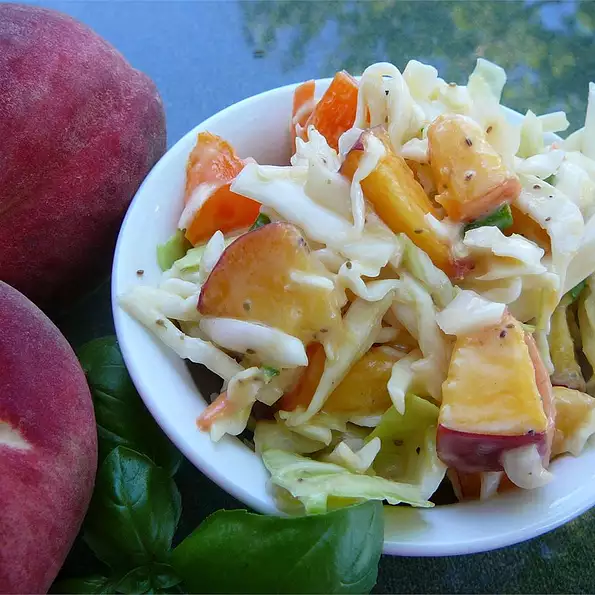

A refreshing summer slaw that blends the flavor of peaches, savoy cabbage,
red bell peppers, and pecans.
I first enjoyed this slaw at a garden party in
Charleston several years ago and have served it each summer
since to the delight
of family and friends.

Recipe by L M KELLY.
Ingredients
- 1 cup pecan pieces
- 1 head savoy cabbage, sliced
- 8 fresh peaches, pitted and sliced
- 1 red bell pepper, sliced
- 1 yellow bell pepper, sliced
- ½ cup chopped green onions
- 2 tablespoons celery seed
- 1 bunch fresh mint sprigs
Directions
- In a large bowl, combine the pecan pieces, cabbage, peaches, red bell pepper, and yellow bell pepper.
Mix in the green onions, celery seed, and mint sprigs. Stir well to combine.
- Serve immediately.
Back to Top
Back to Home page